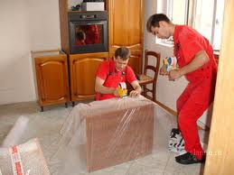
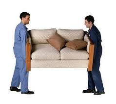
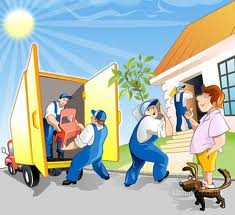
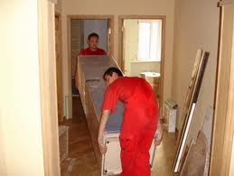
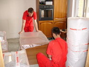

|
Итак, Вы решили переехать, сменить старое место жительства на новое. В народе говорят, что переезд хуже пожара. Большая доля истины в этом есть, потому что все в доме, что устоялось, прижилось, обжилось, нашло свое правильное место, приходится снимать и передвигать. Понятно, что это - стрессовая ситуация, которая может доставить немало морального давления, физического напряжения, вызвать ненужные эмоции.
Наша компания поможет Вам освободиться от всего негативного при переезде. Вам останутся только приятные хлопоты.

Вот несколько основных моментов, которые Вам нужно выполнить при подготовке Вашего жилища к переезду на новое место:
1. Позаботьтесь заранее о смене старого почтового адреса на новый, о перенаправлении почтовой корреспонденции на новый адрес.
2. Определите дату переезда, - чем раньше, тем лучше.
3. Проверьте Ваши финансы, спланируйте необходимые расходы, связанные с переездом.
4. Известите заранее Вашего домовладельца (если таковой имеется) о Вашем будущем переезде. Чем раньше Вы его известите, тем лучше.
5. Позаботьтесь заранее о получении ключей от Вашего нового жилья.
6. Напишите на бумаге список всего самого необходимого, что нужно сделать при подготовке к переезду и во время него.
7. Избавьтесь от ненужного имущества, дабы не перевозить лишнего и не нести дополнительные расходы.
8. Определите, что из перевозимого имущества является самым ценным для Вас чтобы указать на это нашим сотрудникам при переезде. Составьте список самого ценного для Вас.

9. Желательно сделать узнаваемые для Вас маркировки на имуществе, дабы после переезда было легко узнать, где что лежит и поместить все это в правильные места.
10. Приготовьте так называемый "срочный ящик" с вещами, которые понадобятся Вам в первые минуты после того, как Вы окажетесь на новом месте.
11. Определите, что из имущества должно быть перевезено в первую очередь, а что позже.
11. Если у Вас есть маленькие дети, спланируйте их пребывание на день переезда. Лучше всего оставить их у родственников или у друзей.
12. Позаботьтесь о своих домашних животных (если таковые имеются), - где они будут находиться и кто о них позаботится в день переезда.
13. В день переезда не забудьте известить сотрудников компании "ДОМОВОЗ" обо всем, что Вы считаете важным для переезда.
14. После того, как все Ваше имущество прибыло на новое место, вернитесь в старое помещение и все внимательно осмотрите - не забыто ли что важное и нужное?
Наша компания перевезет Вас быстро и без потерь. Мы позаботимся о Вашем имуществе наилучшим образом, избавим Вас от лишних хлопот и сохраним Ваше хорошее настроение!
Не збудьте заказать упаковочные материалы!

На сегодняшний день, наверное, каждый второй квартирный переезд Киев делает, как и десять лет назад – стихийная группа неквалифицированных грузчиков мечется из квартиры на улицу в окружении подозрительно снующих хозяев, впоследствии которые вспоминают давно известную поговорку, сообщающую об эквивалентной стоимости одного переезда. С другой стороны квартирный переезд грузчики воспринимают, как удачный день с вытекающими отсюда последствиями, которые мало в чём совпадают с мыслями хозяев. Сам по себе подобный квартирный переезд мало чем похож на переселение, а скорее подходит для описания спешной эвакуации накануне вступления в отдельно взятую квартиру оккупационных войск неизвестного врага; выражаясь другими словами, подобное мероприятие примечательно отсутствием какой бы то ни было организации, что, в конечном итоге, и даёт такую оценку.
Сейчас, однако, все объявления, которые можно найти в разделах по оказанию услуг с пометками «переезд», «перевозка» и т.п. всё чаще можно найти признаки цивилизованного оказания услуг: такие объявления можно распознать по сообщениям о дополнительных услугах, оказываемых населению совершенно бесплатно, что, разумеется, подразумевает размещения заказа в конечном итоге. Помимо этих ключевых признаков, можно также попытаться составить полный список той или иной компании, оказывающей те или иные услуги населению и предприятиям города и обозначаемых сообщениями типа – офисный переезд, квартирный переезд и т.д. Некоторые поставщики услуг гордо отмечают специальные и специализированные услуги такие, как например, перевозка банкоматов, перевозка сейфов или ценностей. Однако подобных гораздо меньше, нежели число тех, кто поможет осуществить нормальным образом обычный переезд квартиры.
Не для кого ни секрет, что квартирный переезд мало у кого ассоциируется с безмятежными буднями, поскольку переезд квартиры может предшествовать либо новоселью, что, в общем и целом, дело приятное; а может быть связан и с чем-то менее приятным, о чём бы не хотелось здесь упоминать. Однако и в том, и в другом случае необходимо всё-таки осуществить переезд квартиры грузчики же нужны для любого варианта, даже если кто-то из владельцев квартиры сам работает грузчиком. Для организации любого такого мероприятия, необходимо всего лишь найти соответствующий раздел «Переезд Квартиры Киев» в прессе, сделать один или несколько звонков, чтобы всё устроить. Лучше всего, если это будет некоторая компания, оказывающая транспортные услуги и специализирующаяся на всём том, что представляет собой офисный переезд, квартирный переезд, перевозка мебели и т.д. и т.п.
В целом же квартирный переезд Киев видит сегодня каждый день, и это не единичные случаи, а достаточно массовое явление, на фоне которого компания, выполняющая подобный заказ квартирный переезд осуществляет уже по нормативам, а не так, как бог на душу положит. Для заказчика подобная организация, разумеется, только в радость, а для компании – производительность труда плюс рост числа выполняемых заказов. Как видно, обе стороны только выигрывают от этого. Однако, поскольку данная схема работы уже достаточно распространённая, то многие предприятия, работающие на данном рынке услуг, изыскивают резервы и предлагают всё новые и новые пункты услуг в перечне предлагаемых услуг. Такая практика, как известно, приводит к пересмотру существующих стандартов, их постоянному пересмотру и доработке. Ярким примером подобного расширения списка услуг уже стало широкое применение практики использование услуг оценщика, работа которого для заказчика совершенно бесплатна. А с точки зрения заказчика, это ещё один повод узнать больше и о компании, и о том, как правильно организовать переезд.
Обращайтесь к нам!
ДОМОВОЗ – переезд без проблем!
|